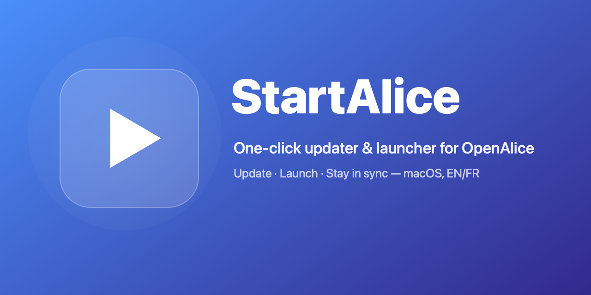

One-click updater & launcher for OpenAlice — the open-source AI trading agent. Mise à jour & lancement en un clic d'OpenAlice — l'agent de trading IA open-source.
OpenAlice ships new betas almost daily. StartAlice turns the whole update-and-run ritual into a single window with a single button. OpenAlice sort de nouvelles betas presque chaque jour. StartAlice condense tout le rituel « mettre à jour puis lancer » en une fenêtre, un bouton.
Local version vs. latest release, current branch, and how far behind you are — at a glance. Version locale vs dernière release, branche et retard sur master — d'un coup d'œil.
Backs up your config, merges master, reinstalls dependencies. Sauvegarde ta config, merge master, réinstalle les dépendances.
Dev mode or packaged app — dev mode even opens the interface in your browser when it's ready. Mode dev ou app packagée — le mode dev ouvre même l'interface dans ton navigateur quand elle est prête.
No checkout yet? StartAlice clones OpenAlice and runs the first install for you. Pas de checkout ? StartAlice clone OpenAlice et lance la première installation.
Your settings live outside the repo — updates never touch them, and are snapshotted first. Tes réglages vivent hors du repo — les mises à jour n'y touchent jamais, et sont sauvegardés d'abord.
English & French, following your Mac's language, switchable instantly. Anglais & français, selon la langue de ton Mac, changeable à tout moment.
OpenAlice is an open-source AI trading agent. Instead of a rigid bot, it gives an AI a managed workspace to research, iterate on quantitative strategies, and act — with live market data, technical analysis and news as context. OpenAlice est un agent de trading IA open-source. Plutôt qu'un bot rigide, il donne à une IA un espace de travail géré pour faire de la recherche, itérer sur des stratégies quantitatives et agir — avec données de marché, analyse technique et actualités en contexte.
StartAlice.dmg from the latest release.Télécharge StartAlice.dmg depuis la dernière release.